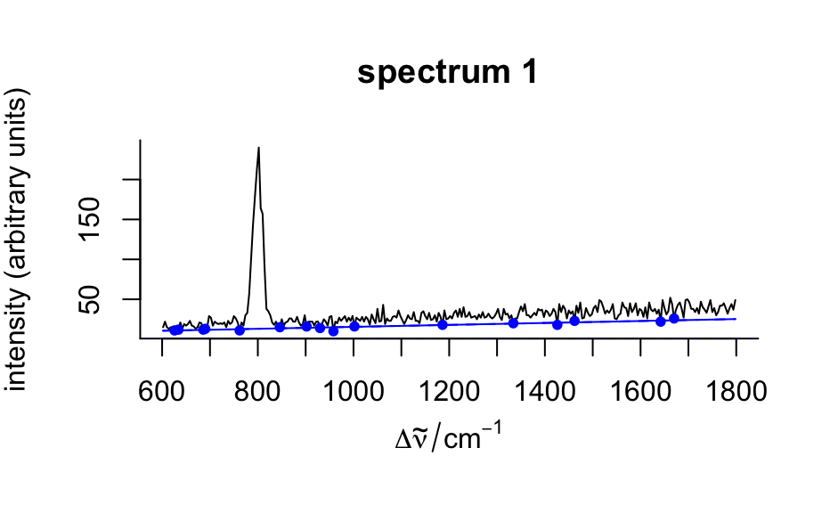

These functions fit polynomial baselines.
spc_fit_poly( fit.to, apply.to = NULL, poly.order = 1, offset.wl = !(is.null(apply.to)) ) spc_fit_poly_below( fit.to, apply.to = fit.to, poly.order = 1, npts.min = max(round(nwl(fit.to) * 0.05), 3 * (poly.order + 1)), noise = 0, offset.wl = FALSE, max.iter = nwl(fit.to), stop.on.increase = FALSE, debuglevel = hy.getOption("debuglevel") )
| fit.to |
|
|---|---|
| apply.to |
|
| poly.order | order of the polynomial to be used |
| offset.wl | should the wavelength range be mapped to -> [0, delta wl]? This enhances numerical stability. |
| npts.min | minimal number of points used for fitting the polynomial |
| noise | noise level to be considered during the fit. It may be given as one value for all the spectra, or for each spectrum separately. |
| max.iter | stop at the latest after so many iterations. |
| stop.on.increase | additional stopping rule: stop if the number of
support points would increase, regardless whether |
| debuglevel | additional output: |
hyperSpec object containing the baselines in the spectra
matrix, either as polynomial coefficients or as polynomials evaluted on
the spectral range of apply.to
Both functions fit polynomials to be used as baselines. If apply.to
is NULL, a hyperSpec object with the polynomial coefficients
is returned, otherwise the polynomials are evaluated on the spectral range
of apply.to.
spc_fit_poly() calculates the least squares fit of order
poly.order to the complete spectra given in fit.to.
Thus fit.to needs to be cut appropriately.
spc_fit_poly_below() tries to fit the baseline on appropriate spectral
ranges of the spectra in fit.to.
For details, see the vignette("baseline").
vignette("baseline", package = "hyperSpec")
see options() for more on debuglevel
C. Beleites
if (FALSE) { vignette("baseline", package = "hyperSpec") } spc <- faux_cell[1:10] baselines <- spc_fit_poly(spc[, , c(625 ~ 640, 1785 ~ 1800)], spc) plot(spc - baselines)spc_fit_poly_below(faux_cell[1:3], debuglevel = 1)#>#>#>#>#> hyperSpec object #> 3 spectra #> 4 data columns #> 300 data points / spectrumspc_fit_poly_below(faux_cell[1:3], debuglevel = 2)#>#>#>#>#>#> hyperSpec object #> 3 spectra #> 4 data columns #> 300 data points / spectrum#>#>#>#>#>#>#>#>#>#>#>#> hyperSpec object #> 3 spectra #> 4 data columns #> 300 data points / spectrum